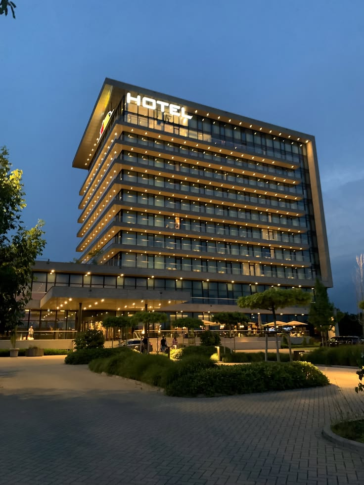
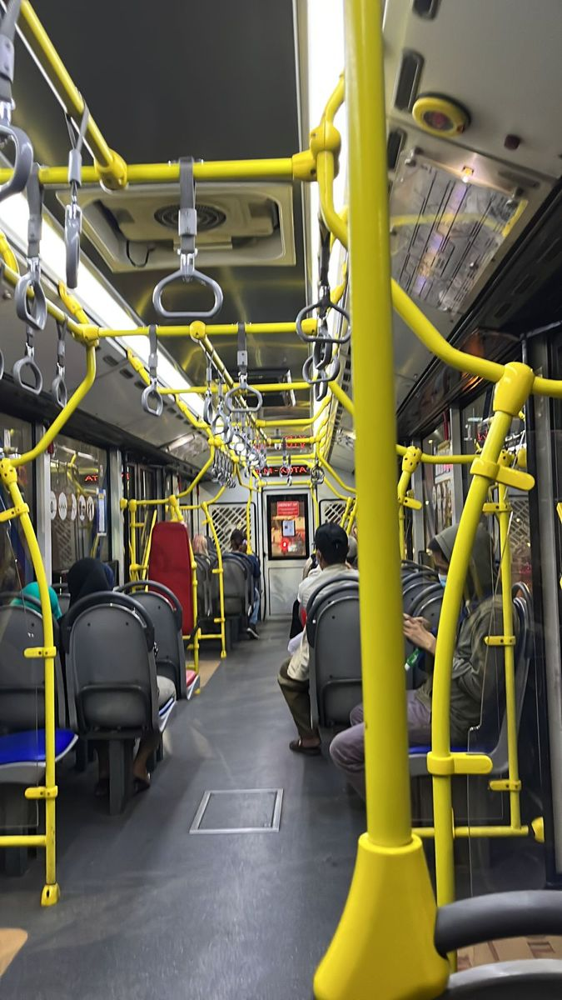
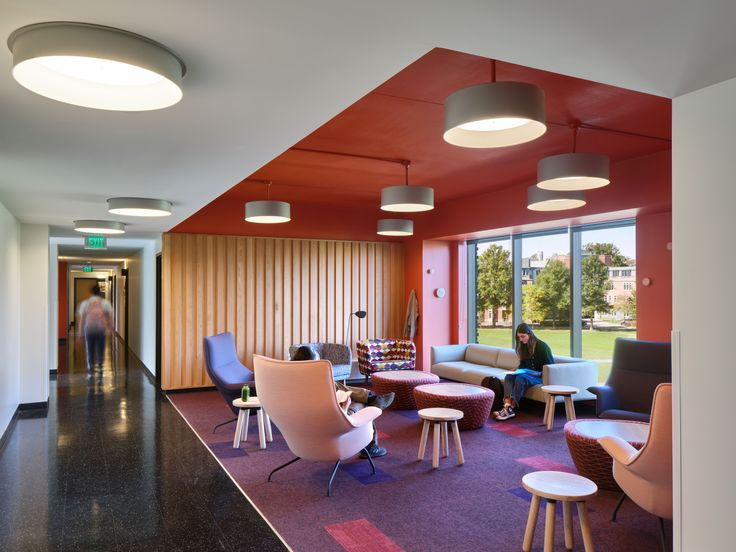
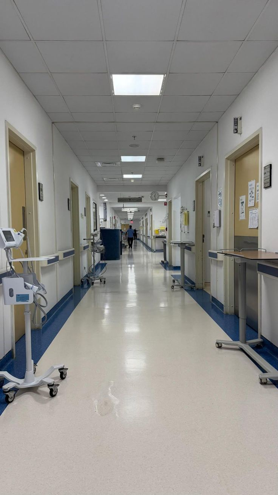

Kötü ikiz (evil twin)
Saldırgan gerçek ağla aynı ya da çok benzer isimde bir erişim noktası açar; bağlananlar trafiğini ona teslim eder.
Giriş sayfasından internetteki izlerinize, KCLogger'ın ağ araçlarından erişim kaydı tutulan mekânlara kadar.
01 · Captive Portal
Otel, havalimanı, kafe ya da hastanenin misafir Wi-Fi'ına bağlandığınızda, internete çıkmadan önce açılan giriş sayfasıdır. Kurum sizi burada tanır ve erişimi başlatır.
Cihazınız "Otel_Misafir" gibi açık bir ağa bağlanır; henüz internete çıkamazsınız.
Ağ ilk web isteğinizi yakalar ve sizi kurumun giriş sayfasına gönderir.
SMS kodu, oda numarası ya da misafir bilgisiyle kendinizi tanıtır, koşulları onaylarsınız.
Doğrulama tamamlanınca internete çıkarsınız; süre ya da kota sınırı olabilir.
Kurum, yasal yükümlülüğü gereği bağlantının ne zaman ve hangi cihazdan yapıldığını kaydeder.
Temsili görünüm. Etkileşimsizdir, hiçbir veri toplamaz.
Saldırgan gerçek ağla aynı ya da çok benzer isimde bir erişim noktası açar; bağlananlar trafiğini ona teslim eder.
Sahte sayfa "internet için e-posta şifrenizi girin" gibi gereksiz bilgiler ister. Girilen her bilgi saldırgana geçer.
Adres çubuğunda kilit yoksa ya da sertifika uyarısı varsa, yazdıklarınız ağdaki başkalarınca okunabilir.
02 · Dijital Ayak İzi
İnternette yaptığınız her işlemin bıraktığı kayıtların bütünü. Bir kısmını bilerek paylaşırsınız, bir kısmı siz fark etmeden oluşur.
Bilerek
Paylaşımlar, yorumlar, doldurduğunuz formlar, üye olduğunuz siteler.
ör. bir fotoğrafa konum etiketi eklemek
Farkında olmadan
Çerezler, IP adresiniz, cihaz bilgileriniz, uygulamaların arka planda eriştiği veriler.
ör. bir sitenin ziyaret sürenizi kaydetmesi
03 · KCLogger
KareCode'un misafirlerine internet sunan kurumlar için geliştirdiği platform. Erişimi captive portal ile yönetir, her kaydı 5651 sayılı Kanun'a uygun biçimde zaman damgasıyla imzalar.
Cihaz ve kullanıcı sayıları, online durum, trafik ve lokasyonlar tek ekranda.
Giriş sayfasını panelden düzenleme; mobil, tablet ve masaüstü önizleme.
Belirli siteleri engelleme ya da yalnızca izin verilen sitelere erişim.
Telefon numarası ve MAC adresi bazlı kısıtlamayla yetkisiz girişe kapalı.
Tarih aralığı ve filtrelere göre ayrıntılı kullanım raporları.
Ping, Traceroute, IP Scan ve Telnet; anında ya da gecikmeli yeniden başlatma.
[2026-11-18 09:42:07] OTURUM lokasyon : Lobi-AP-02 kullanıcı : +90 5•• ••• •• 41 sms doğrulandı cihaz mac : 3C:••:••:••:7E:9A iç ip : 10.20.4.118 dış ip:port : 203.0.113.24:51022 süre : 01:12:45 ↓ 412 MB ↑ 38 MB imza : ✓ zaman damgası ✓ bütünlük [2026-11-18 09:42:08] ARŞİV kayıt saklandı · denetime hazır
Temsili örnektir; gerçek kullanıcı verisi içermez. Alan adları ve biçim üründeki görünümden farklı olabilir.
Yalnızca yetkili kullanım içindir. KCLogger, ağın sahibi ya da yetkili yöneticisi tarafından 5651 sayılı Kanun ve KVKK çerçevesinde kullanılmak üzere tasarlanmıştır. Size ait olmayan ağlarda izinsiz kayıt toplamak yasalara aykırıdır.
04 · Araç takımı
Bağlantı sorunlarını panelden çıkmadan teşhis edin. Bir araç seçin, ne yaptığını ve örnek çıktısını görün.
$ ping 203.0.113.10
yanıt seq=1 süre=11.4 ms
yanıt seq=2 süre=10.9 ms
yanıt seq=3 süre=11.1 ms
3 gönderildi · 3 alındı · %0 kayıp
Ping aracı, belirli bir IP adresine veya alan adına (hostname) erişilebilirliği test etmek için kullanılır. Bu test sayesinde hedef cihazın ağa erişip erişmediğini ve yanıt süresini (latency) kolaylıkla ölçebilirsiniz.
Temsili çıktı; belgeleme amaçlı IP adresleri kullanılmıştır.
05 · Kullanım alanları
Misafirlerine internet sunan ve kayıt tutma zorunluluğu olan her işletmede KCLogger devreye girer.

02
03
04
05